Talk
From the birth
to the death of stars
From a cold cloud of hydrogen to a white dwarf, a neutron star or a black hole — and the physics that decides which end it will be.
Outline
Five parts, one life
I
The birth
Molecular clouds, the Jeans criterion and why a shrinking cloud ends up lighting up.
II
The life
Fusion against gravity, mass and lifetime, the H–R diagram and what happens when the hydrogen runs out.
III
Degenerate stars
Heisenberg and Pauli hold up what fusion no longer can — up to the Chandrasekhar limit.
IV
Neutron stars
Pulsars, magnetars, nuclear density and light that bends — with results from my own research.
V
Black holes
From Laplace to Schwarzschild, the horizon, time that freezes and the stars around Sgr A*.
I
Part one
The birth
A star is born when the gravity of a cold cloud overcomes the thermal motion of its own gas.
Molecular clouds
Where is a star born?
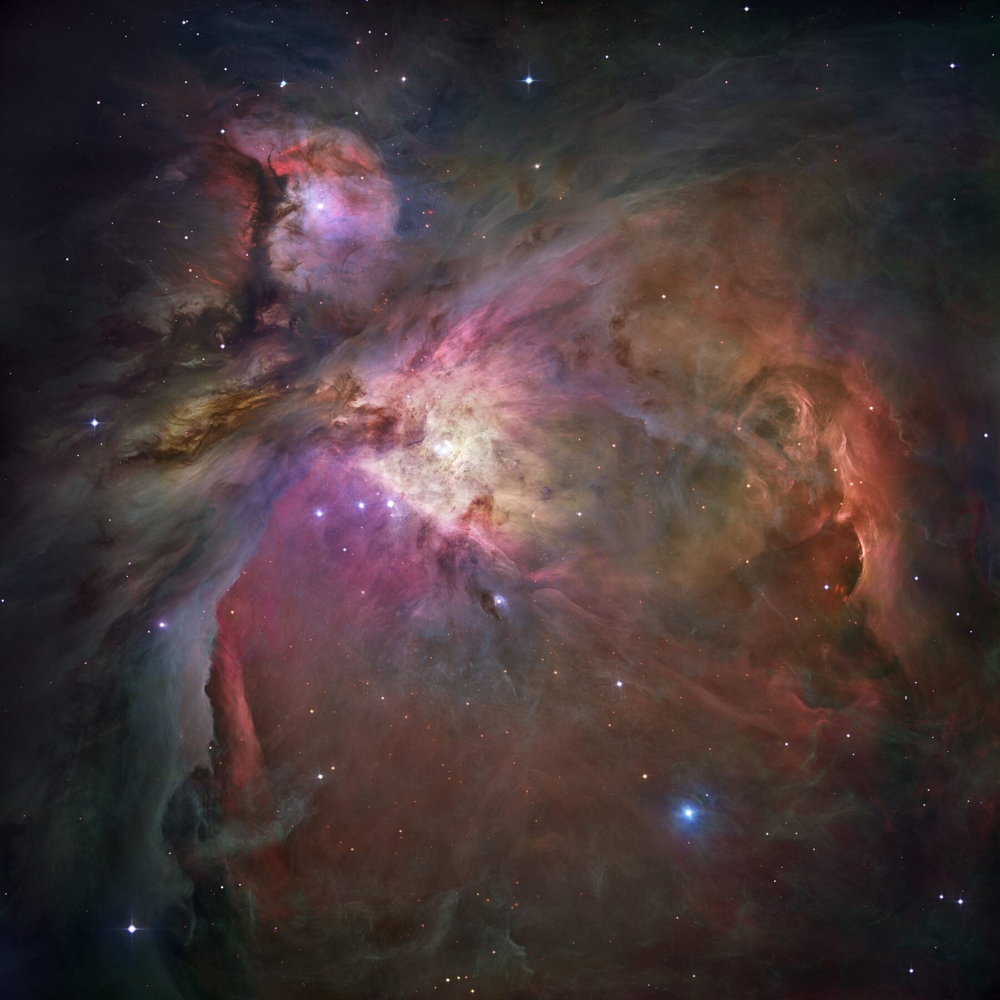
NASA, ESA, M. Robberto · public domainIn nebulae: cold clouds of gas and dust.
- Molecular clouds: the hydrogen is in molecules, H₂.
- Dense enough for chemistry: H₂, carbon monoxide (CO), formaldehyde (H₂CO), water, alcohol…
- Cold: 10 to 20 K, around −260 °C.
10–20 K
temperature
10²–10⁶
molecules per cm³
10⁶ M☉
up to this, in a giant cloud
Even the densest part is a better vacuum than any laboratory’s: the air we breathe has 2.5×10¹⁹ molecules per cm³.
Eagle Nebula · M16 · 7,000 light-years
The Pillars of Creation
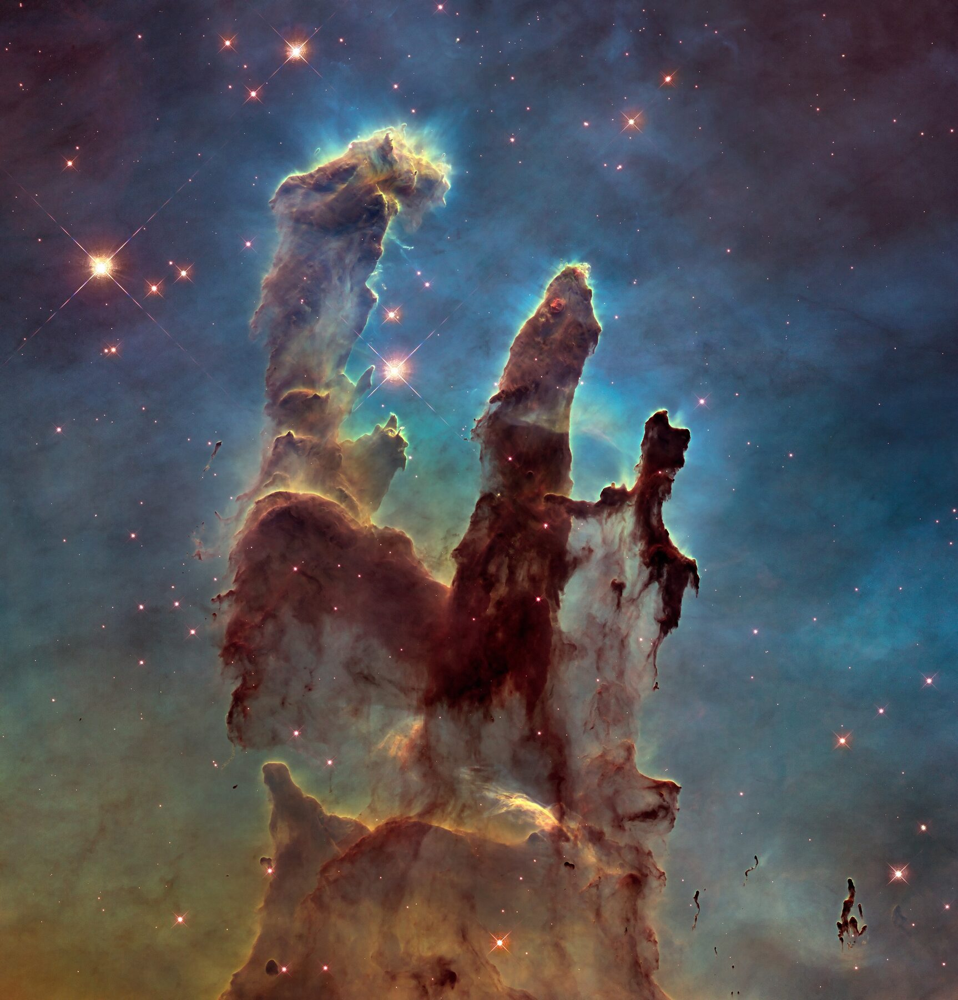
Hubble · visible lightNASA, ESA, Hubble Heritage Team · public domain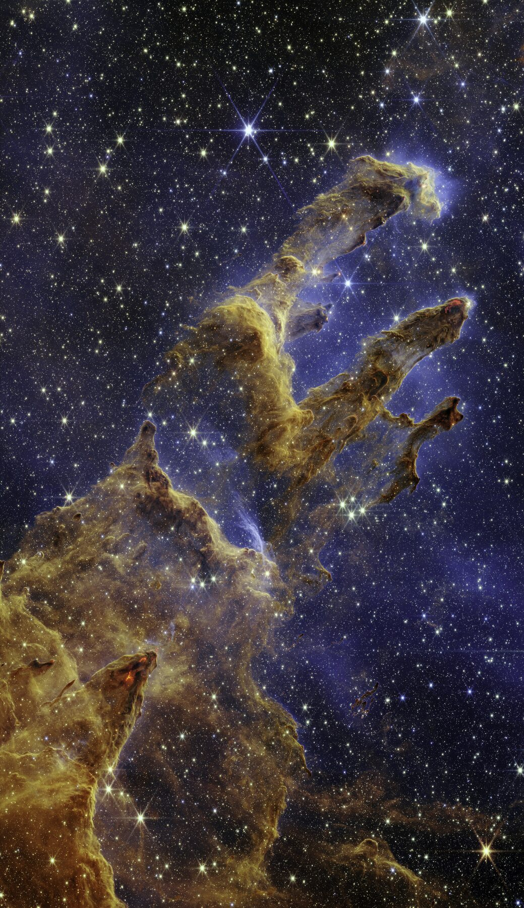
Webb · infraredNASA, ESA, CSA, STScI · public domainStars are being born in the pillars: the protostars.
In visible light the dust hides them. In the infrared it becomes transparent, and they show up as reddish dots at the tips of the pillars.
The left-hand pillar is about 4 light-years tall. Hubble: 1995, retaken in 2014. Webb: 2022.
Sir James Jeans · 1902
When does gravity beat heat?
The idea
A region of radius R and mass M collapses if its molecules, stirred by the cloud’s temperature T, are not fast enough to escape from it.
Then gravity beats the pressure that comes from thermal energy, and any disturbance makes the region fall in on itself.
It is the same escape-velocity sum that will come back in Part V — there, with light in place of the molecules.
Mean kinetic energy of a molecule of mass m, and its gravitational potential energy at the edge of the region:
The threshold for collapse is where the two are equal:
Solving for R:
Jeans length and Jeans mass
The denser the cloud, the smaller the piece that collapses
In a more careful analysis, with pressure perturbations, Jeans found:
As the cloud collapses and gets denser, the mass that can collapse on its own decreases: the cloud breaks up into pieces — and each piece becomes a star. That is why stars are born in groups.
Collapse and fragmentation
From the cloud to protostars
The cloud falls in on itself. The densest regions collapse fastest — the free-fall time goes as ρ−1/2 — and the collapse fragments the cloud into several cores.
Each fragment spins faster and faster as it shrinks, like a skater pulling in her arms: it forms a disc, with a protostar at its centre.
Illustration, not simulation: particles with softened gravity and a little thermal motion, in a plane. Real gas has pressure, turbulence, magnetic fields and radiation — full simulations in Krumholz, Klein & McKee, ApJ 656, 959 (2007).
The difference is temperature
What is the difference between a cloud and a star?
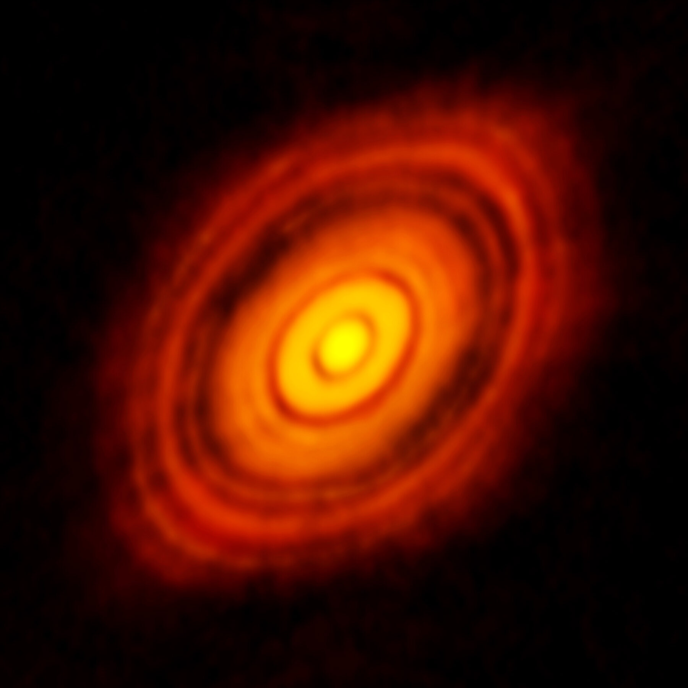
ALMA · CC BY 4.0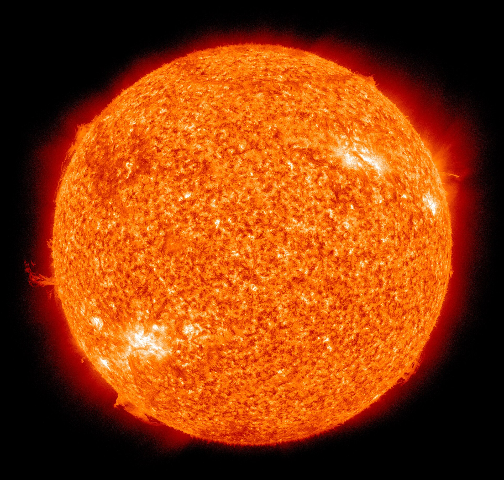
NASA/SDO · public domainBlack-body radiation · Planck 1900
A star is a black body… almost
The hotter the star, the bluer the peak and the far greater the brightness: doubling T multiplies the luminosity by 16.
The spectral classes O B A F G K M are a temperature scale: from over 30,000 K (blue) to under 3,700 K (red). The Sun is a G2.
“Almost”: the real spectrum has absorption lines from the elements in the atmosphere, and that is how we know what stars are made of.
Hayashi · Henyey · 1961
From protostar to main sequence
- The protostar starts as an invisible concentration of gas deep inside the cloud.
- It contracts and heats up, hidden in a cocoon of dust: it only shows up in the infrared.
- It blows the cocoon away and becomes visible, still shrinking: first almost straight down the diagram (the Hayashi track), then to the left (the Henyey track).
- When the centre reaches ~10 million K, hydrogen starts to fuse: the star joins the main sequence and stops shrinking.
Schematic tracks, with key points roughly following Iben’s models (1965). The more massive the star, the faster: ~50 million years for 1 M☉, ~1 million for 5 M☉.
II
Part two
The life
Billions of years of balance between gravity, which crushes, and nuclear fusion, which pushes outwards.
What is a star’s life like?
Brightness, stability… and peace?
Brightness.
Stability.
Peace.
Not peace. At the centre of every star, non-stop, the reaction of a hydrogen bomb is going on.
Proton–proton chain
The heart of a star is (literally) a hydrogen bomb
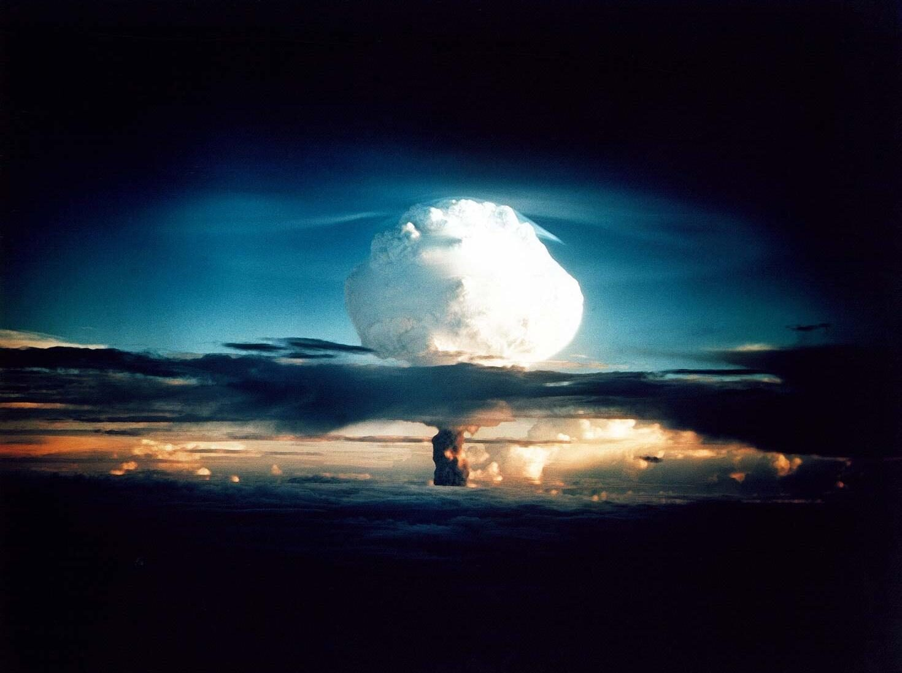
NNSA / Nevada Site Office · public domain²H + ¹H → ³He + γ
³He + ³He → ⁴He + 2 ¹H in total: 4 ¹H → ⁴He + 2 e⁺ + 2 νe + 26.7 MeV
Nuclear reactions keep up
- the temperature — the black-body glow
- the pressure that prevents gravitational collapse
Gravity keeps
- the star together — the bomb does not fly apart
- radiation trapped: a photon takes ~100,000 years to get out
610 million t/s
of hydrogen turn into helium
4.3 million t/s
of mass turn into light (E = mc²)
9×10⁹
Ivy Mikes per second
Hydrostatic equilibrium
A violent balance
In every layer, the weight of everything above is held up by the difference in pressure. If the star shrinks, the centre heats up, fusion speeds up and the pressure pushes back; if it swells, it cools and fusion slows down. A thermostat.
| centre of the Sun | value |
|---|---|
| temperature | 15.7 million K |
| density | 150 g/cm³ |
| pressure | 2.5×10¹⁶ Pa |
Without pressure, the Sun would collapse in ~30 minutes — the free-fall time at its mean density.
Mass, luminosity and lifetime
More mass, shorter life
A 10 M☉ star has ten times more fuel, but shines thousands of times brighter: it lives ~30 million years. The Sun, ~10 billion. A red dwarf of 0.2 M☉, trillions — longer than the age of the Universe.
Every low-mass star ever born is still alive.
Hertzsprung · 1911 · Russell · 1913
The H–R diagram
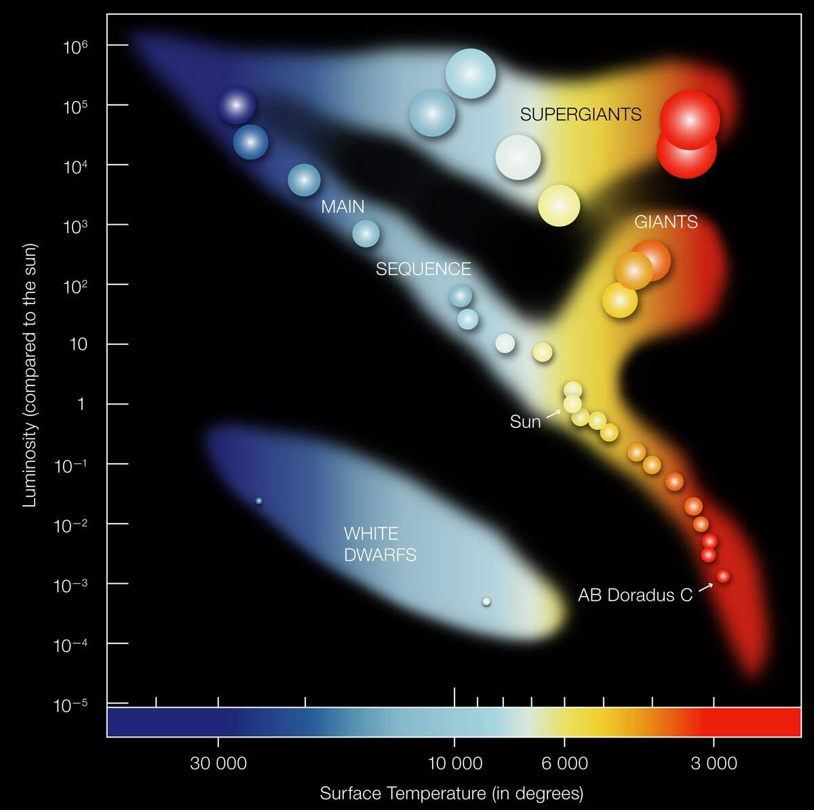
ESO · CC BY 4.0Temperature (or colour) on the horizontal axis, increasing to the left; luminosity on the vertical axis.
- Main sequence: the diagonal, where stars spend 90% of their lives burning hydrogen in the core.
- Giants and supergiants: cool and huge, top right.
- White dwarfs: hot and small, bottom left.
When the star runs out of hydrogen in its core, little energy is left to support the weight of the layers above — 90% of the star.
When the core runs out of hydrogen
Three things at once
1 · Gravity starts to win
The helium core contracts, and the contraction relights hydrogen burning in a shell around it.
2 · The core heats up
Until another reaction ignites: ⁴He → ¹²C (triple-alpha, at 100 million K); in massive stars, ¹²C → ¹⁶O → … → ⁵⁶Fe, in shells like those of an onion.
3 · The outer layers swell
The energy pushes the envelope out: the star grows and cools — a red giant. Above ~8 M☉, a red supergiant.
And when the fire goes out?
Two paths, three fates
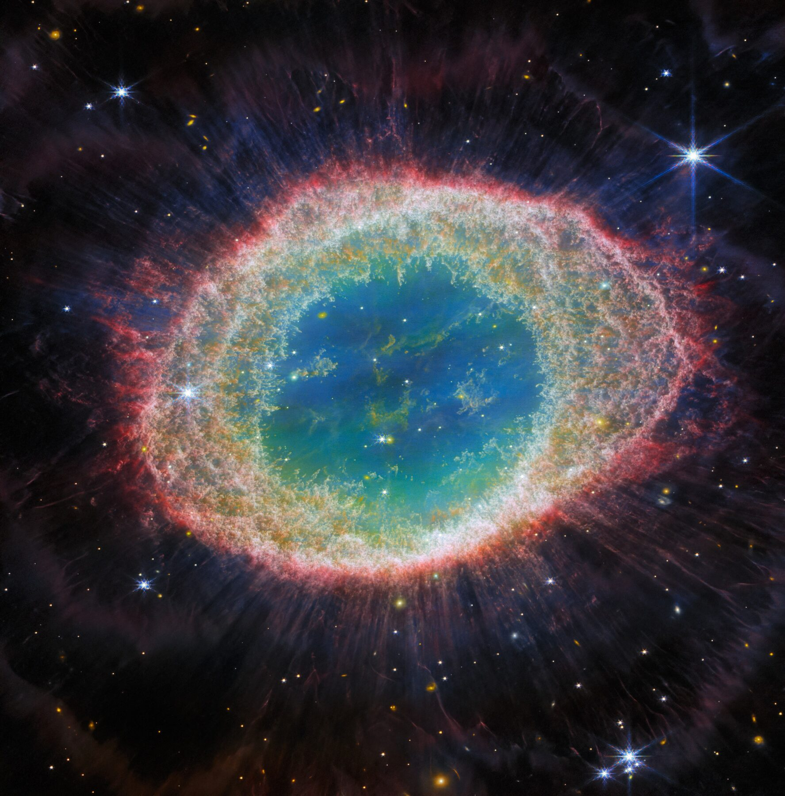
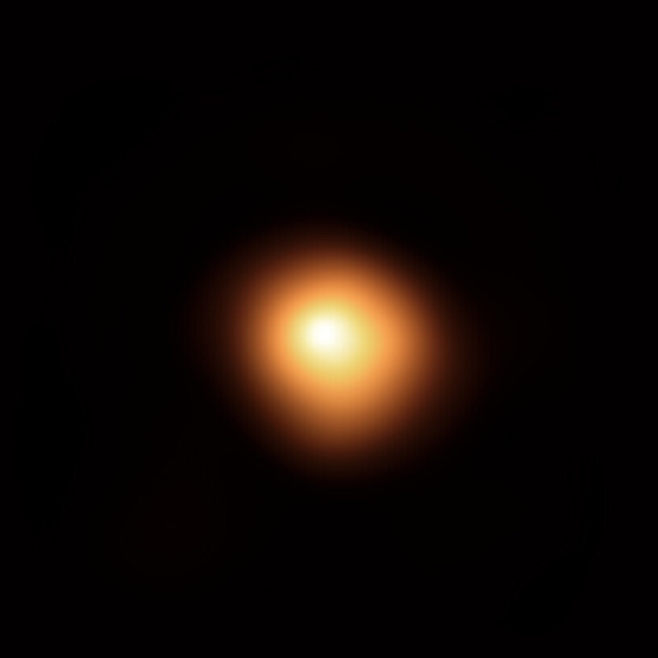
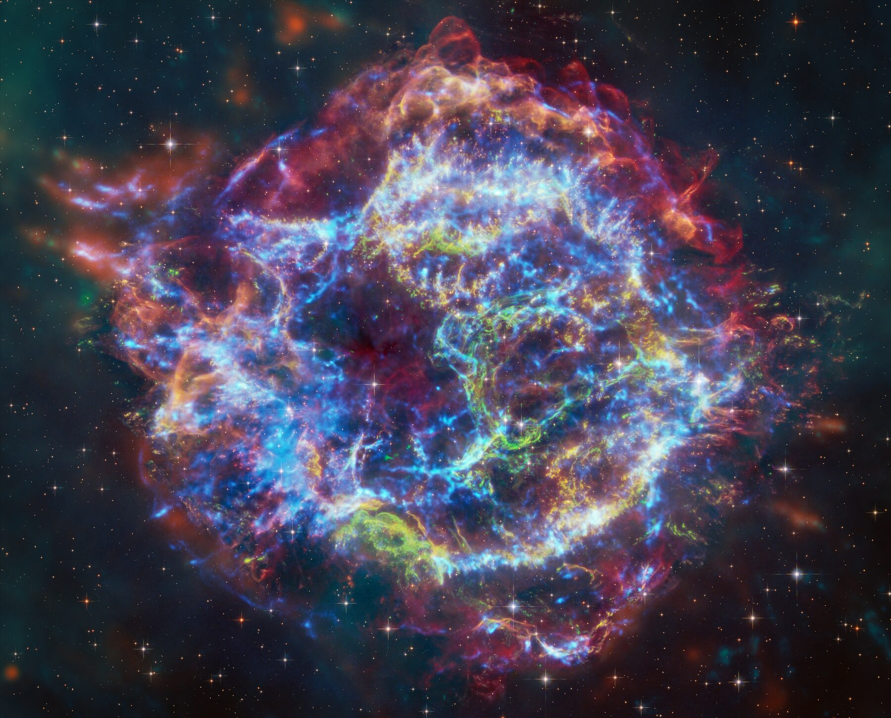
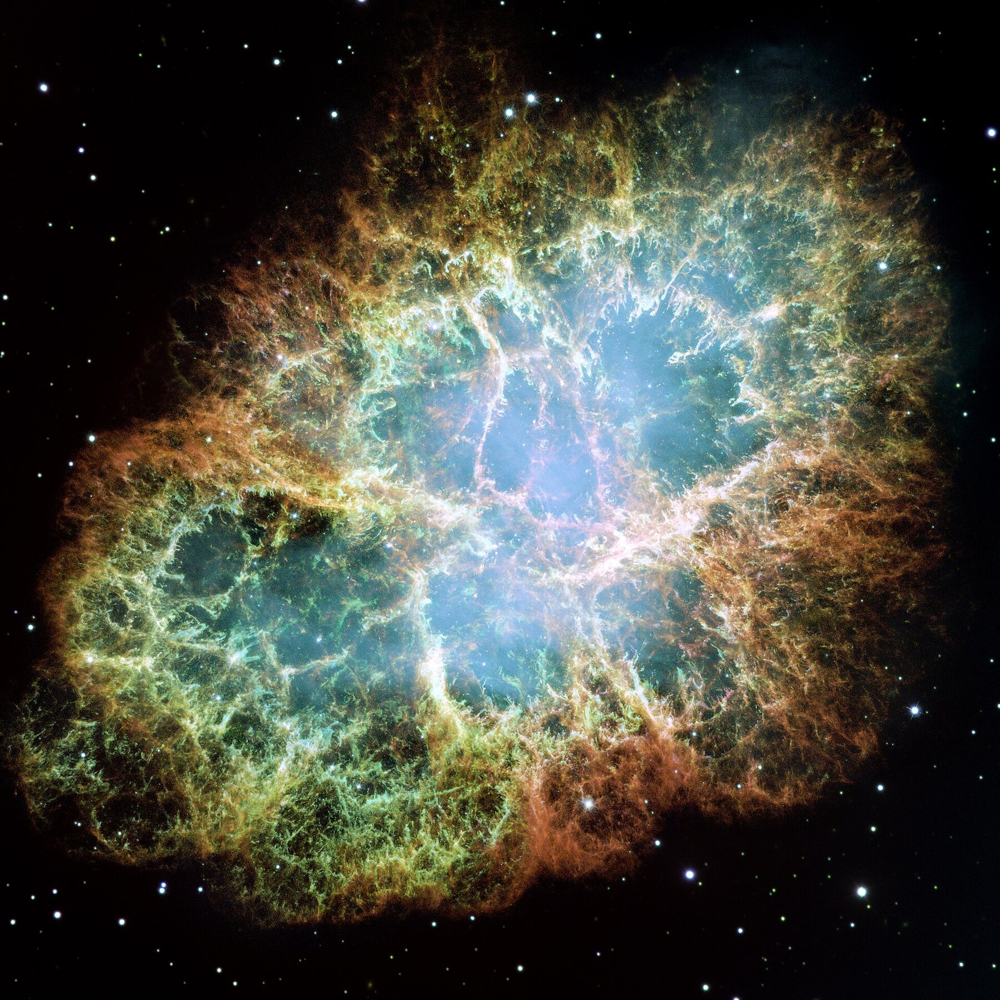
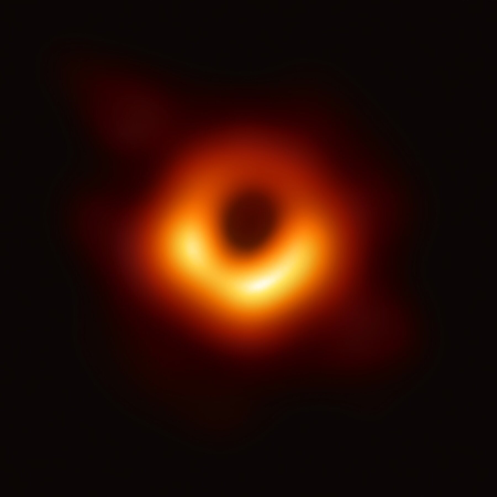
Gravitational collapse
When the fuel runs out
Without nuclear reactions, the pressure they kept up is gone: gravity wins and the star’s matter goes into free fall.
How long does it take?
At the Sun’s mean density, ~30 minutes. For the iron core of a massive star, ~0.1 s.
For some stars there is still a way out: degeneracy pressure.
III
Part three
Degenerate
stars
When fusion stops, what holds the star up is no longer heat: it is quantum mechanics.
Degenerate stars
The size of the Earth, or of a city
White dwarfs
R ≈ R⊕ · M ≈ M☉ · ρ ≈ 10⁶ g/cm³
A teaspoonful weighs ~5 tonnes. Held up by degenerate electrons.
Neutron stars
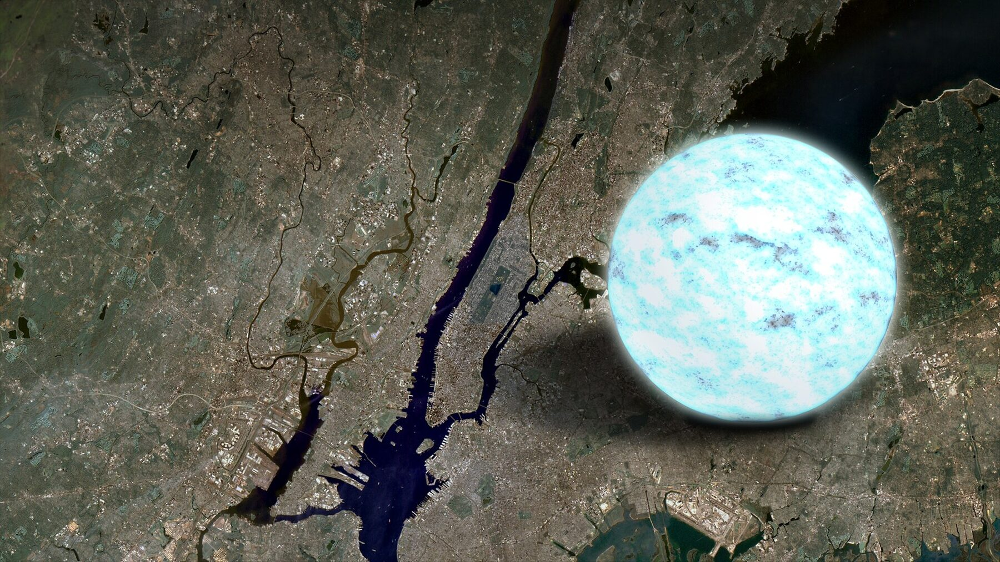
NASA's Goddard Space Flight Center · public domainR ≈ 12 km · M ≈ 1.4–2 M☉ · ρ ≈ 10¹⁴–10¹⁵ g/cm³
A teaspoonful weighs ~500 million tonnes. Held up by degenerate neutrons and the nuclear force.
Quantum mechanics · 1925 – 1927
Heisenberg and Pauli to the rescue
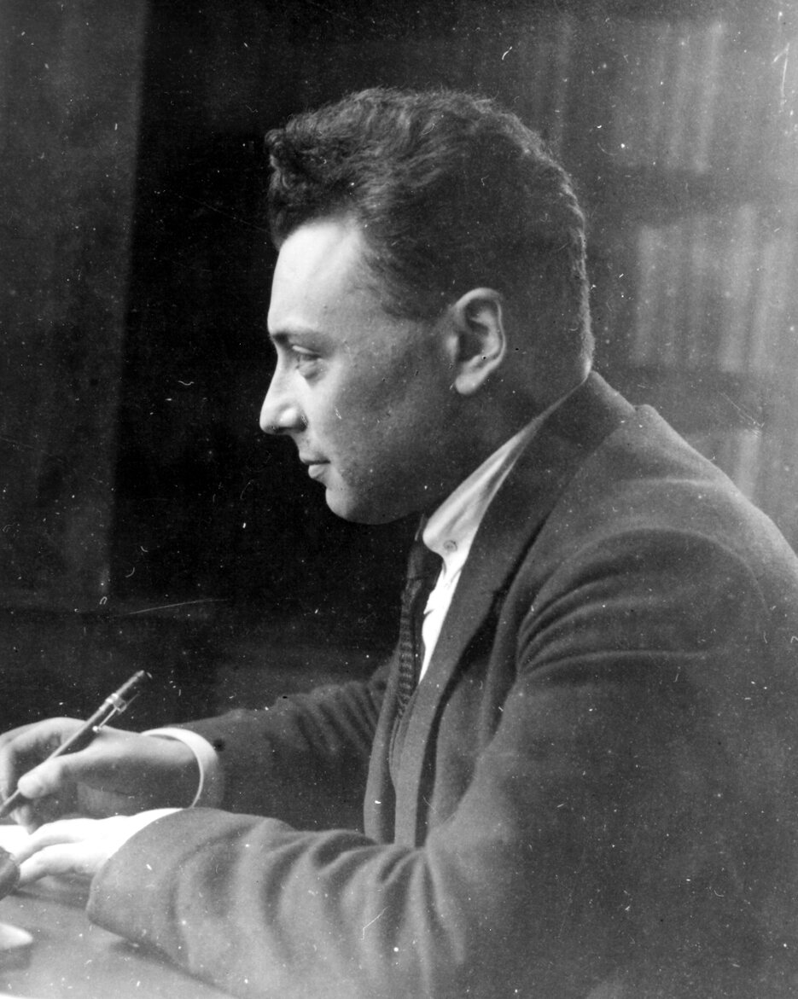
Uncertainty principle · 1927
Confining a particle to a small region forces its momentum to be large.
Exclusion principle · 1925
Two identical fermions — electrons, protons, neutrons — cannot occupy the same quantum state.
Together: squeezing fermions costs energy, even at zero temperature.
Pauli exclusion principle
Why fermions push back
Each energy level holds two electrons: one with spin up, the other spin down. The next ones are forced to go higher.
In a box of width Δx, the levels are spaced by Δp ≈ ħ/Δx. With N electrons, the last one has momentum N/2 · Δp: if Ne = 6, the maximum momentum is 3Δp.
Squeezing the box pushes the levels apart: the electrons gain momentum with no need for heat. That is degeneracy pressure.
Chandrasekhar · 1930 · Nobel Prize 1983
The maximum mass of white dwarfs
Curve: Nauenberg’s approximation (1972) for an electron gas at any degree of relativity. Points: Sirius B, Procyon B and 40 Eridani B. The more mass, the smaller the white dwarf — and at MCh the radius goes to zero.
M > MCh
Collapse! Next stop: neutron stars
At the end of a massive star’s life, the iron core passes 1.4 M☉ and the electrons can no longer hold it up. In less than a second it falls from ~3,000 km to ~30 km, the electrons are captured by the protons, turning them into neutrons — and the rest of the star is blown off in a supernova. A neutron star is left at the centre.
Artist’s animation · NASA’s Goddard Space Flight Center Conceptual Image Lab (animation: Jonathan North) · SVS 20413 · public domain. A white dwarf that crosses the limit by accreting matter also explodes — a type Ia supernova — but leaves nothing behind.
IV
Part four
Neutron
stars
More than a solar mass in a 12 km sphere, spinning up to hundreds of times a second, with the strongest magnetic fields in the Universe.
Supernova of 1054 · 6,500 light-years
The Crab Nebula
1054
recorded by Chinese astronomers: visible in daylight for 23 days
33 ms
period of the pulsar at the centre: 30 turns a second
4×10³⁸ erg/s
lost by the rotation as it slows down — this is what lights up the whole nebula
Cambridge · 28 November 1967
The first pulsar: “LGM-1”
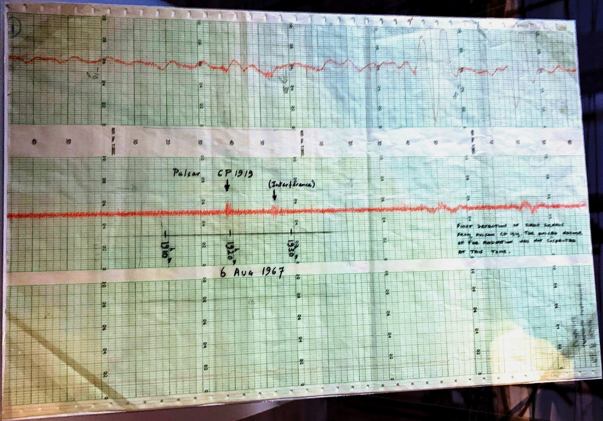
Bill Thompson · CC BY-SA 4.0Bell noticed a bit of “scruff” that kept coming back on the radio telescope’s paper chart: pulses every 1.337 s, as regular as clockwork. Nickname: LGM-1, for Little Green Men. It was a spinning neutron star.
Pulsar theory
What is measured, and what is inferred
| observable | expression |
|---|---|
| period | P |
| characteristic age | tc = P/2Ṗ |
| magnetic field | B = (3Ic³PṖ/8π²R⁶)1/2 |
| rotational energy lost | Ėrot = −4π²IṖ/P³ |
Canonical neutron star
M = 1.4 M☉ · R = 10 km · I = 10⁴⁵ g cm²
B = 3.2×10¹⁹ (PṖ)1/2 G
|Ėrot| = 3.9×10⁴⁶ Ṗ/P³ erg/s
Only P and Ṗ are measured. The rest comes from assuming a spinning magnetic dipole — the straight lines in the diagram.
SGRs and AXPs
The magnetars
| ordinary pulsars | SGRs / AXPs | |
|---|---|---|
| P | 10⁻³ – 10 s | 2 – 12 s |
| Ṗ | ~10⁻¹⁵ s/s | 10⁻¹³ – 10⁻¹⁰ s/s |
| LX | ~10³⁰–10³³ erg/s | 10³² – 10³⁶ erg/s |
| tc | > 10⁶ years | ~10³ – 10⁴ years |
SGR: Soft Gamma Repeaters. AXP: Anomalous X-ray Pulsars. Two classes that turned out to be one: in the ATNF catalogue, 25 magnetars have a measured period.
- Slow: P ≈ 2–12 s, for a canonical neutron star (1.4 M☉, 10 km, 10⁴⁵ g cm²).
- Too bright in X-rays: LX > Ėrot. Rotation cannot pay the bill.
- Who pays, in the standard model: giant magnetic fields, B > 10¹⁴ G — above the quantum critical field, 4.4×10¹³ G.
27 December 2004 · SGR 1806−20
A giant flare released ~10⁴⁶ erg in 0.2 s — more than the Sun emits in 100,000 years. At its peak, ~7×10⁴⁶ erg/s: some 20 trillion suns. It disturbed the Earth’s ionosphere from ~28,000 light-years away.
Transient activity
A magnetar, spinning
| event | energy |
|---|---|
| short bursts (~0.1 s) | 10³⁹ – 10⁴¹ erg |
| outbursts (months) | 10⁴¹ – 10⁴³ erg |
| giant flares | 10⁴⁴ – 10⁴⁶ erg |
The field lines, anchored in the crust, get twisted over time. When the crust can no longer take the stress, it cracks — a starquake — and the magnetic energy comes out all at once.
Giant flares in the Galaxy and the Magellanic Clouds: 1979, 1998 and 2004.
A hot spot on the surface
Light bends: 85% of the surface in view
The highest density in the Universe
Forged in the core of a neutron star
“Thor Odinson, my heir, my firstborn. So long entrusted with the mighty hammer Mjölnir, forged in the heart of a dying star.”
And what if it were forged in the core of a neutron star, at ρ = 10¹⁴ g/cm³? A head of 17.5 × 26 × 18 cm:
Research · modern equations of state
Mass and radius with real nuclear physics
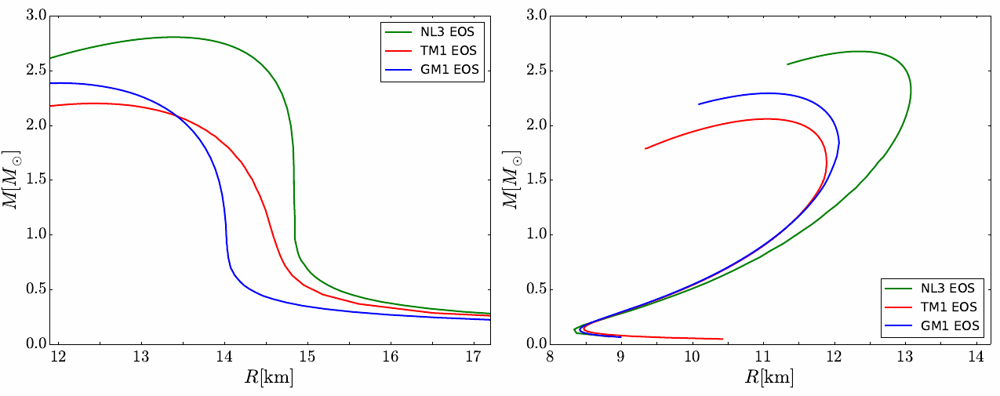
A neutron star is not a ball of free neutrons: the pressure comes from the nuclear force, described by relativistic mean-field models.
- Each equation of state gives a curve M(R) — and a maximum mass, between ~2 and 2.8 M☉.
- With these curves, M, R and the moment of inertia I are no longer canonical values: they are computed.
Figures in this section: R. C. R. de Lima and collaborators. Coelho, Cáceres, de Lima, Malheiro, Rueda & Ruffini, A&A 599, A87 (2017).
Research · who pays for the glow?
Magnetars powered by rotation?
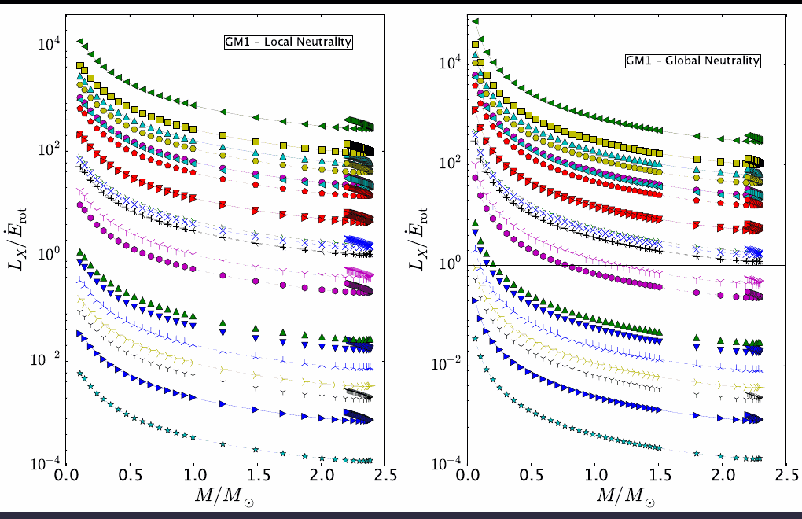
With realistic I(M) and R(M), Ėrot changes. If LX/Ėrot < 1, rotation is enough: no giant field is needed.
Conclusion: 9 (+3?) rotation-powered
LX/Ėrot < 1: Swift J1834.9−0846, PSR J1846−0258, 1E 1547.0−5408, SGR J1745−2900, XTE J1810−197, PSR J1622−4950, SGR 1627−41, SGR 0501+4516, CXOU J171405.7−381031.
LX/Ėrot ~ 1: SGR 1900+14, SGR 0418+5729, Swift J1822.3−1606.
Discovered on 25 April 2013 · 0.1 pc from Sgr A*
SGR J1745−2900, the Galactic Centre magnetar
| start | pulsed fraction | kTBB (keV) | RBB (km) | L (10³⁵ erg/s) |
|---|---|---|---|---|
| 12 May 2013 | ~0.38 | 0.88 ± 0.01 | 2.52 ± 0.09 | 4.9 ± 0.5 |
| 8–14 Oct 2016 | ~0.55 | 0.64 ± 0.03 | 0.78 ± 0.11 | 0.13 ± 0.02 |
Chandra, 0.3–8 keV. Coti Zelati et al., MNRAS 471, 1819 (2017): three and a half years of the outburst’s decay.
3.76 s
period
~5×10³⁵ erg/s
in the discovery outburst (Swift)
The hot spot shrank (from 2.5 to 0.8 km) and cooled, and the pulsed fraction rose. Can a real neutron star explain this?
Published version of this analysis: de Lima, Coelho, Pereira, Rodrigues & Rueda, ApJ 889, 165 (2020).
SGR J1745−2900
Two checks
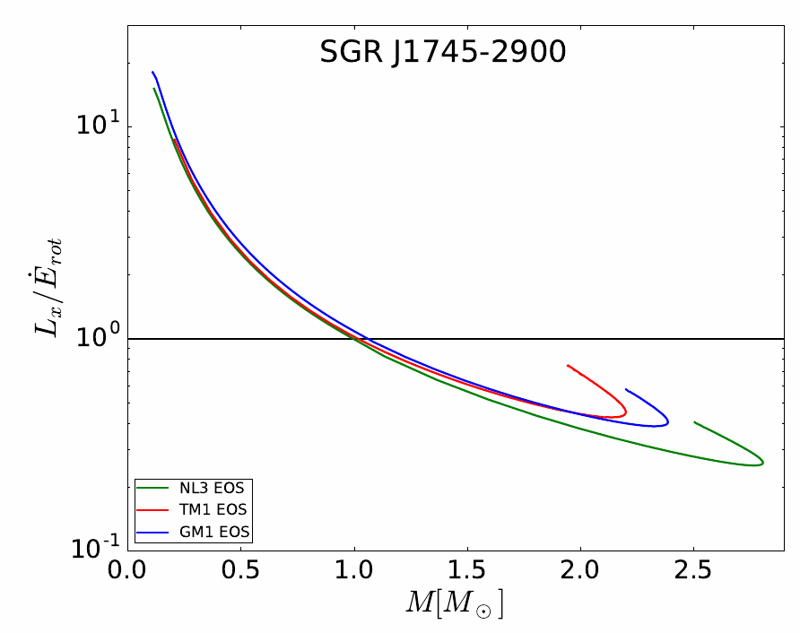
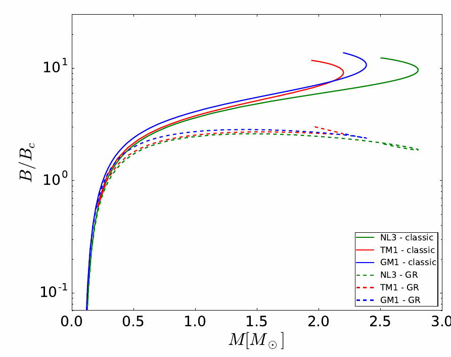
Turolla & Nobili 2013 · Beloborodov 2002
The pulsed-flux model
i = arccos(r̂·ĉ) · j = arccos(r̂·l̂)
- Circular spots of any size, anywhere on the surface (Turolla & Nobili 2013).
- M and R come from the equations of state (GM1, TM1, NL3).
- Schwarzschild exterior: the rotation is slow (P ≈ 2–10 s) and its effects on the metric are neglected.
Research · the code
What the code computes
Main output
- map of pulsed fractions in the (i, j) plane;
- light curve: normalised flux against rotational phase.
Side calculations
- angular opening of the polar cap (light cylinder);
- Beloborodov angle and visible area of the star;
- maximum possible pulsed fraction.
Validity
Error < 3% for R > 3Rs (here, R/Rs = 3.38), with Rs = 2GM/c².
| variable | definition | source |
|---|---|---|
| M, R | mass and radius | equation of state |
| Ns, θc, T | number, half-opening and temperature of the spots | black-body fit |
| θd | angular distance between the spots | pulsed fraction |
| i, j | viewing angles | PF and pulse profile |
Beloborodov classes (2002)
I · the antipodal spot never appears, and the primary is seen all the time. II · the primary always, and the antipodal for part of the time. III · the primary disappears for a fraction of the period. IV · both are seen all the time.
SGR J1745−2900 · 2016
Pulsed fraction and light profile
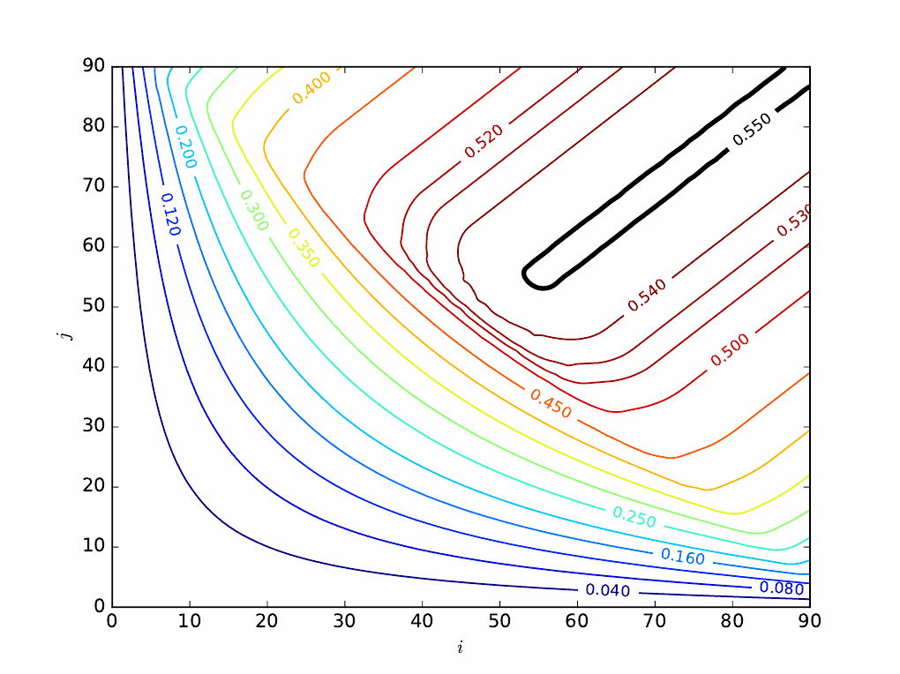
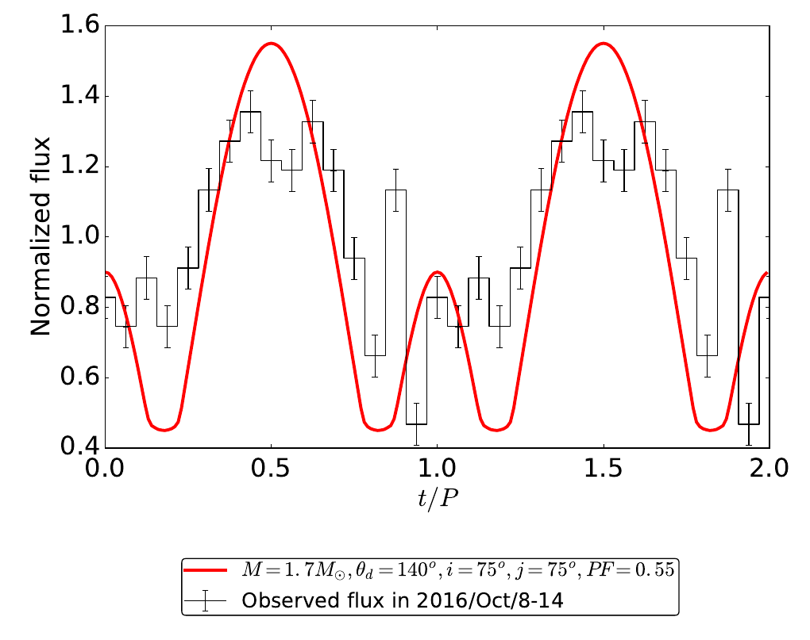
V
Part five
Black
holes
When not even the neutrons can hold, the star falls inside its own horizon — and vanishes from the visible Universe.
Tolman · Oppenheimer · Volkoff · 1939
Mmax ≈ 2 M☉ — and beyond?
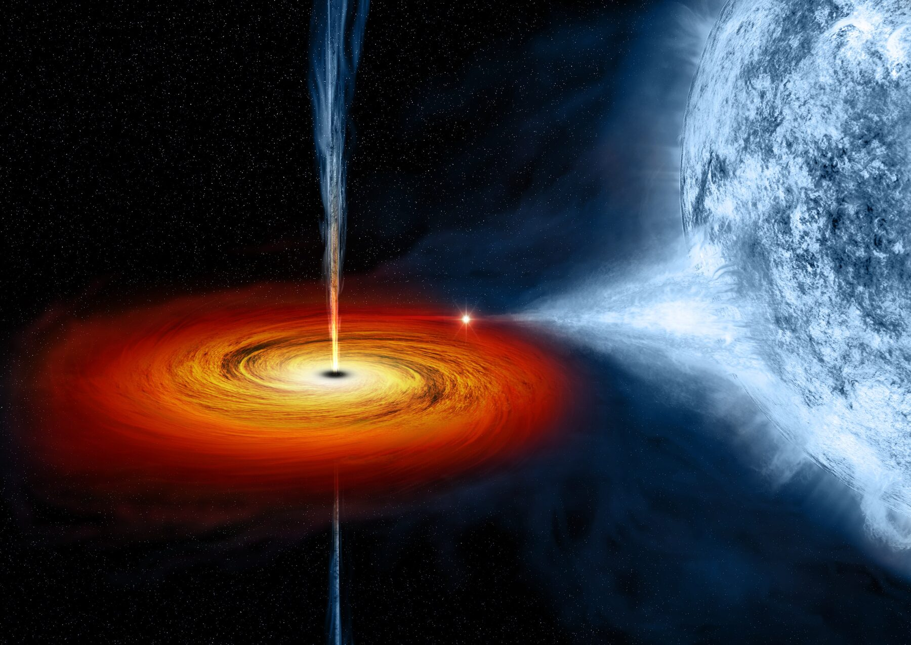
NASA/CXC/M. Weiss · public domainNeutron stars also have a maximum mass. Above ~2–2.3 M☉, neither neutron pressure nor the nuclear force can hold the star up.
2.08 M☉
PSR J0740+6620, the heaviest measured precisely
~21 M☉
Cygnus X-1, the first accepted black hole (1972)
But what if the neutron star gains more mass — accreting gas from a companion — and goes over Mmax?
The final collapse
Nothing can stop the collapse
No known force can hold the star up.
And what if there is some physics we don’t know yet, strong enough to halt the collapse?
It makes no difference: once the event horizon forms, it is too late. Inside, every future points to the centre.
1783 – 2019
A brief history of black holes
1783
Michell: “dark stars”, from which light cannot escape
1796
Laplace arrives at the same idea
1916
Schwarzschild: the first exact solution of GR
1935
Eddington: “there should be a law of Nature…”
1939
Oppenheimer & Snyder: the collapse, calculated
1963
Kerr: black holes that spin
1967
Wheeler popularises the name “black hole”
2019
EHT: the first image, of M87*
1796 · Pierre-Simon Laplace
A dark star
By Newton’s physics, light could not escape from a sufficiently massive and compact object.
On Earth, vesc = 11.18 km/s. At what r would the escape velocity equal the speed of light?
Earth: 8.9 mm. Sun: 2.95 km.
December 1915 · the Russian front
A month after Einstein

 F. Schmutzer · public domain
F. Schmutzer · public domainBarely a month after Einstein presented General Relativity (25 November 1915), Schwarzschild — serving in the artillery on the Russian front — found an exact analytical solution of the equations.
“I have read your paper with the utmost interest. I had not expected that one could formulate the exact solution of the problem in such a simple way. I liked very much your mathematical treatment of the subject.”
Schwarzschild died in May 1916, of an illness he contracted at the front.
Spherical, uncharged, non-rotating
The first exact solution was already a black hole
What neither of them knew
The solution was complete: besides the exterior of a star, it described a spherical, neutral, non-rotating black hole — the Schwarzschild black hole.
Until then
Einstein had only looked for approximate solutions — the post-Newtonian formalism — and used them to explain the bending of light by the Sun and the precession of Mercury.
It took some 50 years for the community to accept that such a thing really existed.
Royal Astronomical Society · 11 January 1935
Eddington versus Chandrasekhar
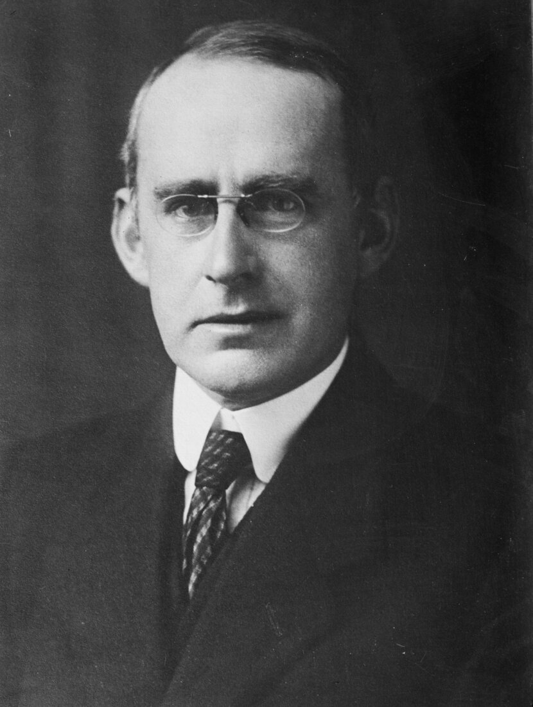
Bain News Service · public domainOne of the first to understand General Relativity, Eddington saw it at once: if Chandrasekhar was right about the mass limit, massive stars would inevitably form black holes.
“I think there should be a law of Nature to prevent a star from behaving in this absurd way!”
Chandrasekhar would later regret that it took almost thirty years for the significance of his result to be recognised.
K. C. Wali, Chandra: a biography of S. Chandrasekhar (1991).
1939 · 1963 · 1967
The collapse, the spin and the name
The Schwarzschild metric
Three slices of the same formula
Δt = Δθ = Δφ = 0
Δrp = (1 − 2GM/c²r)−1/2 Δr
Radial distances measured with a ruler: larger than Δr.
Δr = Δθ = Δφ = 0
Δτ = (1 − 2GM/c²r)1/2 Δt
The time on a clock at rest: it runs slower than one far away.
Δt = Δr = 0
ΔS = r [(Δθ)² + sin²θ (Δφ)²]1/2
The angular part is the familiar one: the distance between two points on the Earth’s surface (θ = 90° − latitude).
Proper distance
The ruler in the well
- r is the coordinate of an observer at infinity: the circumference divided by 2π.
- Δrp is the distance a local observer measures with a ruler.
- Distances are larger than they would be in flat space: between the spheres of circumference 2πr₁ and 2πr₂ there is more than r₂ − r₁.
- The factor (1 − rs/r)−1/2 diverges at rs, but the distance to the horizon is finite: from 3rs down to rs it is 3.6 rs, not 2.
On the left, Flamm’s paraboloid: the equatorial slice (constant t) drawn as a surface with the same geometry.
The event horizon
The Schwarzschild radius
Where the factor (1 − 2GM/c²r) in the metric vanishes. There is nothing there — no surface, no wall: it is a causal boundary. What goes in does not come out.
| object | mass | RS |
|---|---|---|
| Earth | 6×10²⁴ kg | 8.9 mm |
| Sun | 1 M☉ | 2.95 km |
| neutron star (radius 12 km) | 1.4 M☉ | 4.1 km |
| Cygnus X-1 | 21 M☉ | 62 km |
| Sgr A* | 4.3×10⁶ M☉ | 12.7 million km · 18 R☉ |
| M87* | 6.5×10⁹ M☉ | 1.9×10¹⁰ km · 128 AU |
Proper time
Time in the well
- The clock deep in the well runs slower, as seen from far away — and it is no illusion: when it comes back up, it shows less time.
- GPS: +45 μs/day from altitude, −7 μs/day from the satellites’ speed. Without the correction, an error of ~10 km a day.
- At the surface of a neutron star: Δτ/Δt ≈ 0.8 — some 12 minutes lost every hour.
- At the horizon, Δτ/Δt → 0.
What happens at the horizon?
Seen from afar, time freezes
An observer at infinity would see time freeze at RS. Does that mean light stops?
No! It means it is trapped. For photons Δs² = 0; if Δτ → 0, the spatial terms vanish too (Δr = Δθ = Δφ = 0): the photon does not leave that region.
Photons: our natural clocks
A wave of frequency f is a clock that ticks 1/Δt times per second:
Whoever falls in notices nothing special when crossing the horizon.
Beyond the horizon
Every future points to the centre
Matter must move inside the light cones.
- Far away, the cone is the familiar one: you can go outwards or inwards.
- Near the horizon, it tips inwards, but still leaves a way out.
- At the horizon, the outer edge becomes vertical: “outgoing” light stands still.
- Inside, both sides of the cone point to smaller r: moving towards the future means moving towards the centre.
Eddington–Finkelstein coordinates: t̃ = t + rs ln|r/rs − 1|; infalling light follows straight lines at 45°.
The centre of the Milky Way · 27,000 light-years
Sagittarius A*: stars orbiting nothing
4.3×10⁶ M☉
mass at the centre
16 years
period of S2
S2 passes ~120 AU from the centre at ~7,700 km/s, 2.6% of c. In 2018 and 2020 the VLT measured its gravitational redshift and its Schwarzschild precession.
Nobel Prize 2020, with Roger Penrose. Orbits: Gillessen et al., ApJ 837, 30 (2017).
Event Horizon Telescope · 2019 and 2022
The shadows
 Sgr A* · 2022 · 4.3 million M☉ · 27,000 light-yearsEHT Collaboration · CC BY 4.0
Sgr A* · 2022 · 4.3 million M☉ · 27,000 light-yearsEHT Collaboration · CC BY 4.0The ring is ~5 RS across: it is the photon sphere, at 1.5 RS, seen through the lens of the black hole itself — shadow diameter = 2√27 GM/c² ≈ 5.2 RS.
Schwarzschild geodesics
How light bends
- b > 3√3 GM/c² ≈ 2.6 RS: the light is deflected and escapes.
- b = 2.6 RS: unstable orbit on the photon sphere, r = 1.5 RS.
- b < 2.6 RS: captured.
The term on the right is the General Relativity correction. Without it, light would travel in a straight line.
Kerr geodesics · 1963
The black hole that spins
- The rotation drags the spacetime around it (the Lense–Thirring effect).
- Light travelling with the rotation gets closer before being captured: the photon orbit goes from 1.5 RS down to 0.5 RS as a → M.
- Against the rotation, the orbit moves out, up to 2 RS.
- Capture becomes asymmetric: the shadow shifts and flattens on one side.
Kerr null geodesics in Boyer–Lindquist coordinates, integrated in Mino time.
r = 0
The singularity
r = RS is not singular
The metric seems to blow up there, but that is just a bad choice of coordinates — like longitude at the North Pole. Whoever falls in crosses the horizon without noticing, and the curvature there is finite.
r = 0 is
The curvature diverges — the Kretschmann invariant goes as 48G²M²/c⁴r⁶ — and tidal forces stretch anything apart. General Relativity predicts its own limit: a quantum theory of gravity has to take over there, and we do not have one yet.
Recap
Three masses decide the end
MJ
Jeans
Above it, a cold cloud collapses, fragments and lights up stars. It shrinks as the cloud gets denser.
1.44 M☉
Chandrasekhar
Above it, degenerate electrons cannot hold: there is no white dwarf, and the iron core collapses.
~2.2 M☉
Tolman–Oppenheimer–Volkoff
Above it, not even neutrons can hold: a horizon forms, and the star becomes a black hole.
The whole life of a star is gravity on one side and, on the other, heat, fusion and — in the end — quantum mechanics.
Image credits
Freely licensed photos and figures
Albert Einstein — Ferdinand Schmutzer / Adam Cuerden · public domain

Karl Schwarzschild — unknown author · public domain

M87* (EHT) — Event Horizon Telescope Collaboration · CC BY 4.0

Sgr A* (EHT) — EHT Collaboration · CC BY 4.0

Crab Nebula — NASA, ESA, J. Hester and A. Loll (Arizona State University) · public domain

The Sun (SDO) — NASA/SDO (AIA) · public domain

Hertzsprung–Russell diagram — ESO · CC BY 4.0

Wolfgang Pauli — unknown author · CC BY 4.0

Supernova animation (video) — NASA's Goddard Space Flight Center Conceptual Image Lab (Jonathan North) · public domain
Pillars of Creation, Webb 2022 — NASA, ESA, CSA, STScI; image processing: Joseph DePasquale, Anton M. Koekemoer, Alyssa… · public domain
.jpg){kind=link}
Pillars of Creation, Hubble 2014 — NASA, ESA, Hubble Heritage Team (STScI/AURA) · public domain

“Cosmic Cliffs”, Carina Nebula — NASA, ESA, CSA, STScI · public domain

Orion Nebula — NASA, ESA, M. Robberto (Space Telescope Science Institute/ESA) and the Hubble Space… · public domain

HL Tauri disc — ALMA (ESO/NAOJ/NRAO) · CC BY 4.0

Ivy Mike, 1952 — National Nuclear Security Administration / Nevada Site Office · public domain

Betelgeuse — ESO/M. Montargès et al. · CC BY 4.0
.jpg){kind=link}
Ring Nebula (M57) — ESA/Webb, NASA, CSA, M. Barlow, N. Cox, R. Wesson · CC BY 4.0
_(weic2320b).jpg){kind=link}
Werner Heisenberg — Bundesarchiv, Bild 183-R57262 / unknown author · CC BY-SA 3.0 de

Subrahmanyan Chandrasekhar — AIP Emilio Segrè Visual Archives, Gift of Kameshwar Wali · attribution (AIP)

Jocelyn Bell, 1967 — Roger W Haworth · CC BY-SA 2.0
,_1967.jpg){kind=link}
Antony Hewish — Woodruff T. Sullivan III / NRAO/AUI Archives (NRAO/AUI/NSF) · CC BY 4.0

Pierre-Simon Laplace — Jean-Baptiste Paulin Guérin · public domain
_-_Gu%C3%A9rin.jpg){kind=link}
Arthur Eddington — Bain News Service (Library of Congress) · public domain

J. Robert Oppenheimer — unknown author (U.S. Department of Energy) · public domain
.jpg){kind=link}
John A. Wheeler — Emielke · CC BY-SA 3.0

Roy Kerr — Bengt Nyman · CC BY-SA 4.0

Cygnus X-1 (illustration) — NASA/CXC/M. Weiss · public domain
The centre of the Milky Way — ESO · CC BY 4.0

Andrea Ghez — BorderlineRebel · CC BY-SA 4.0
.jpg){kind=link}
Reinhard Genzel — ESO/Mahdi Zamani · CC BY-SA 4.0

Neutron star over Manhattan — NASA's Goddard Space Flight Center · public domain
Chart record of CP 1919, 1967 — Bill Thompson (Billthom) · CC BY-SA 4.0

Cassiopeia A — X-ray: NASA/CXC/SAO; Optical: NASA/ESA/STScI; IR: NASA/ESA/CSA/STScI/Milisavljevic et… · public domain
.jpg){kind=link}
Research figures (Part IV) — R. C. R. de Lima and collaborators; Coelho et al., A&A 599, A87 (2017); de Lima et al., ApJ 889, 165 (2020)
P–Ṗ diagram — ATNF pulsar catalogue 2.8.1 (Manchester et al., AJ 129, 1993, 2005)
Orbits around Sgr A* — Gillessen et al., ApJ 837, 30 (2017); GRAVITY Collaboration, A&A 657, L12 (2022)
Thank you
Questions?
Slides, animations and dashboards available at rafael-lima.pages.dev/talks